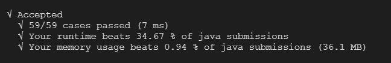
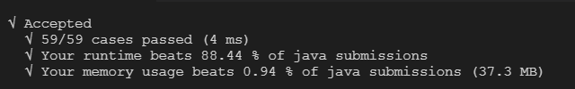

题目
给定一个仅包含大小写字母和空格 ’ ’ 的字符串，返回其最后一个单词的长度。
如果不存在最后一个单词，请返回 0 。
说明：一个单词是指由字母组成，但不包含任何空格的字符串。
示例:
1 | 输入: "Hello World" |
解题方案
思路：
用 java 的
split函数分割字符串，取出最后一个即可达到目的
代码如下：
1 | public int answer1 (String s){ |
结果：

思路：
第一种方案的执行数据慢，说明
split函数相当消耗时间（时间复杂度跟空间复杂度过高）
那么我们不使用该函数了
首先应该考虑最后一个单词所在位置，它的前面一定是一个空格，它的后面可能没有任何字符，也可能是若干个空格
那么首先可以考虑把最后一个单词后面可能存在的空格去掉 ， 使用trim函数 （也可以自己写方法去掉）
然后使用字符串索引函数找出最后一个空格的 index下标 ，简单的方法是使用lastIndexOf
然后用字符串的长度减去最后一个空格下标再减去1 即可
代码如下：
1 | public int answer2 (String s){ |
结果：
资源消耗较多，但是速度上去了。。

思路：
和方案2差不多的思路，但是不使用特别高性能的函数 ，如
trim等
代码如下：
1 | public int answer3 (String s){ |
结果：